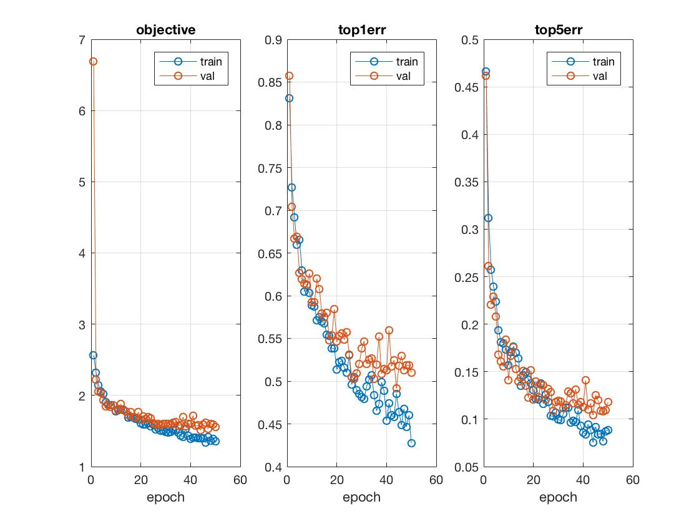
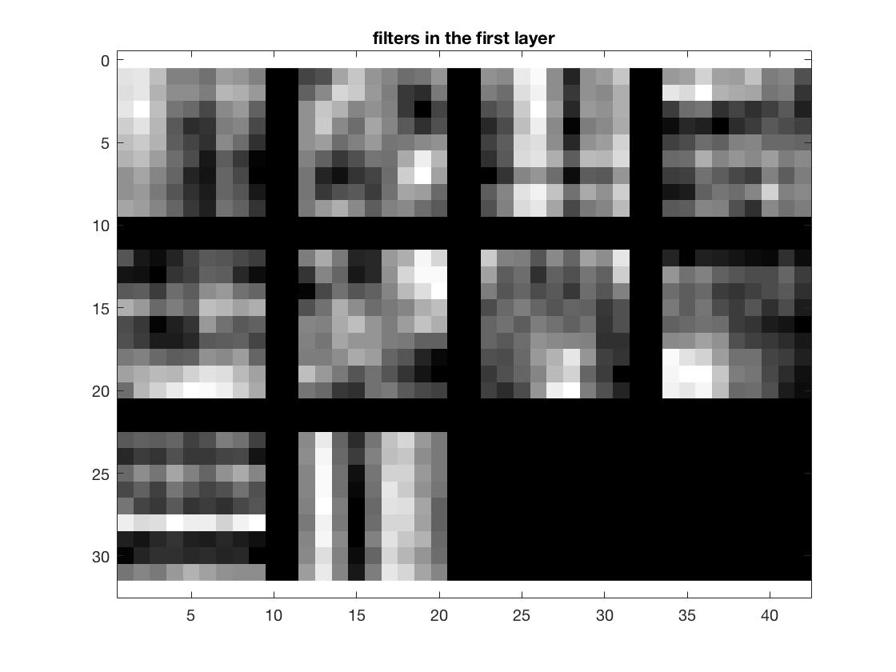
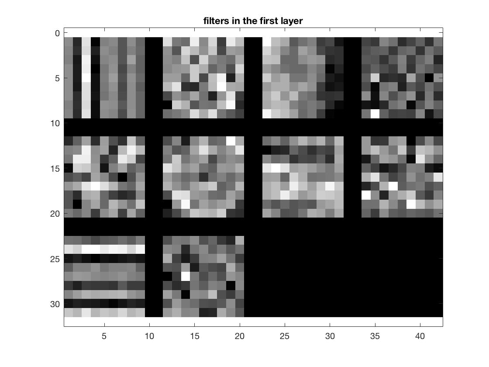
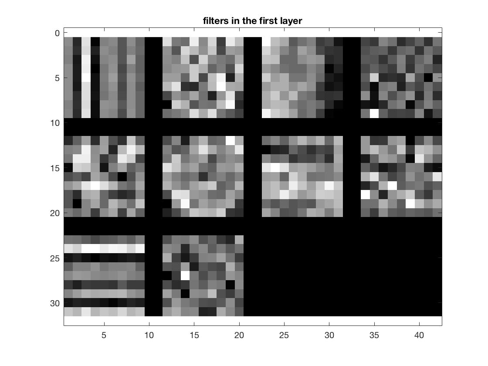
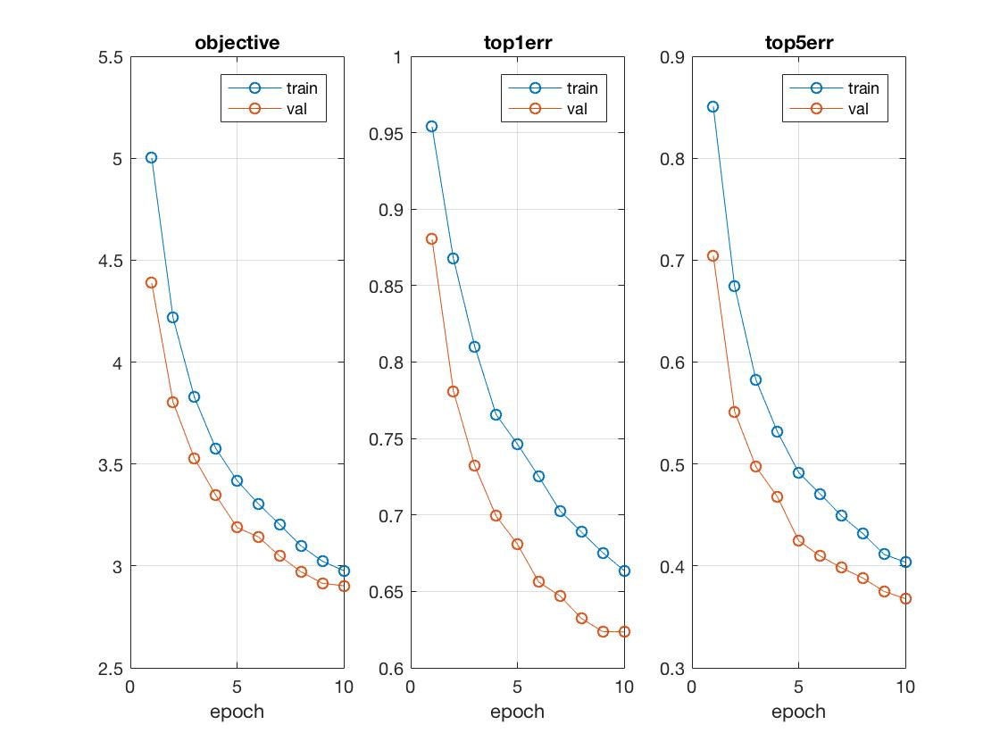
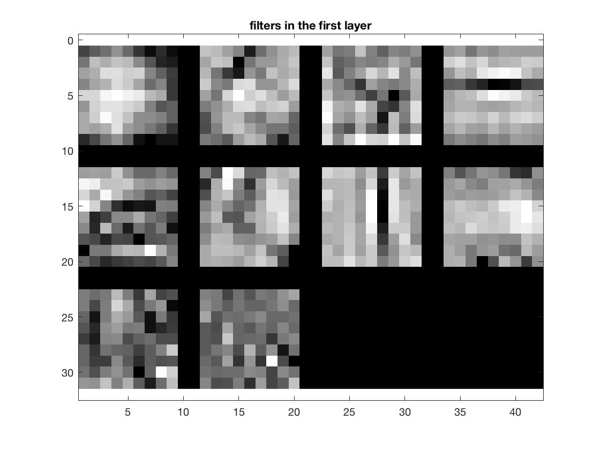
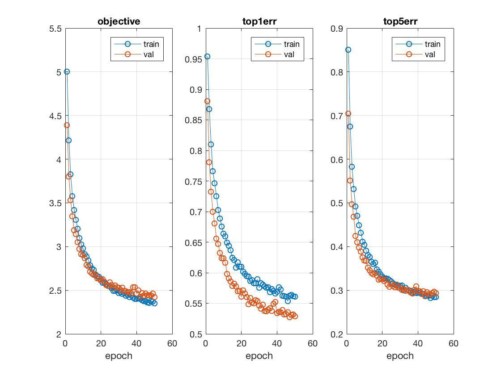
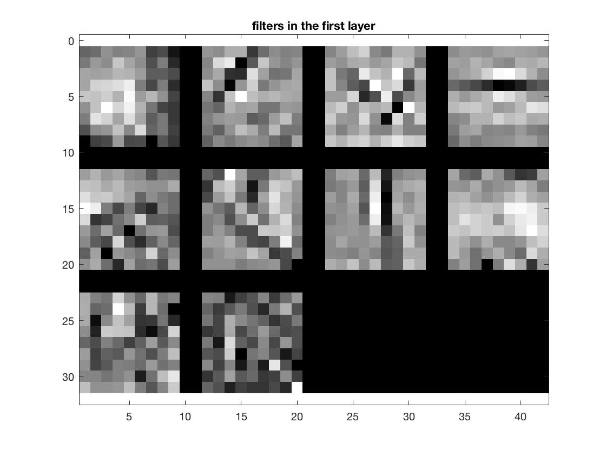

Project 6 / Deep Learning

This project is based on building neural networks for image category recognition tasks. We use the MatConvNet toolbox to train deep convolutional networks for scene recognition. The project consisted of two parts.
Part 1
Jitter
Zero Centering
Regularization
Depth of the network
Batch Normalization
Part 1 consisted of building a convolutional network from scratch to recognize screens. As discussed on the Project page we add several elements to the design to make sure that the trained model is good enough to give a reasonable accuracy with test images. I added the following components,
The first change I made was adding jitter. This is basically a process to add variety to the image database used for training the network by using existing images. I made changes such that 50% of the images in each batch are flipped to their mirror images.
For zero centering the images, a mean image was calculated over the entire 1500 image database and substracted from each image. This gives a significant boost of around 10-15% boost the accuracy of the model.
To prevent overfitting the model to the training data I added, as suggested, dropout regularization with a dropout rate of 0.5. This gives a boost to the accuracy by 8-9%.
To increase the depth of the network I added an extra set of convolution layer, ReLU and maxpool layers. The previous implementation used a maxpool layer which covered a very large area and was loosy. By adding an additional layer, we have a better progression from the image to the last FC layer.
I added a batch normalization layer after each convolution layer as suggested. This enables us to increase the learning rate and hence the ability to train the network faster than before.
Network
The following is the code for my network. I have configured the code to run 50 epochs with a batch size of 50 and learning rate of 0.01. I did run the with higher number of epochs and lower learning rates and got better accuracy. The idea was to make sure that the rf size increased gradually to a maximum of 64 (size of image) and the data size decreased gradually to 1.
net.layers = {} ;
net.layers{end+1} = struct('type', 'conv', ...
'weights', {{f*randn(9,9,1,10, 'single'), zeros(1, 10, 'single')}}, ...
'stride', 1, ...
'pad', 0, ...
'name', 'conv1') ;
net = insertBnorm(net, size(net.layers,2));
net.layers{end+1} = struct('type', 'pool', ...
'method', 'max', ...
'pool', [2 2], ...
'stride', 2, ...
'pad', 0,...
'name', 'maxPool1') ;
net.layers{end+1} = struct('type', 'relu') ;
net.layers{end+1} = struct('type', 'conv', ...
'weights', {{f*randn(6,6,1,10, 'single'),...
zeros(1, 10, 'single')}}, ...
'stride', 2, ...
'pad', 3, ...
'name', 'conv2') ;
net = insertBnorm(net, size(net.layers, 2));
net.layers{end+1} = struct('type', 'pool', ...
'method', 'max', ...
'pool', [3 3], ...
'stride', 2, ...
'pad', 0,...
'name', 'maxPool2') ;
net.layers{end+1} = struct('type', 'relu') ;
net.layers{end+1} = struct('type', 'dropout',...
'rate', 0.5);
net.layers{end+1} = struct('type', 'conv', ...
'weights', {{f*randn(6,6,10,15, 'single'),...
zeros(1, 15, 'single')}}, ...
'stride', 2, ...
'pad', 0, ...
'name', 'fc1') ;
Results
After making all the above mentioned chanages, I get a validation error of 0.491333 and code for part1 runs and executes in ~518 seconds (around 8 minutes).
 For a run of 1527 seconds with 160 epochs and a learning rate of 0.01, I get a validation error of 0.42.
 

Part 2
Part 2 of this project required us to fine tune an existing network for our purposes. The project page suggests that using existing networks for new tasks is a significantly better strategy than training a new network from scratch.
We take the vgg-f layer and replace the final layer to fit our purposes of 15 scene recognition task. This network works in colored images unlike part1 which was configured to work with B&W images. In this case, we increment the third dimension of the B&W images to 3 to make it work with the network.
Changes to the network
The following were the changes done to the existing vgg-f network
net.layers{end-1} = struct('type', 'conv', ...
'weights', {{f*randn(7,7,4096,15, 'single'),...
zeros(1, 15, 'single')}}, ...
'stride', 1, ...
'pad', 3, ...
'name', 'fc8') ;
net.layers{end} = struct('type', 'softmaxloss') ;
net = insertdropout(net, 18);
net = insertdropout(net, 21);
I tried adding normalization layers after 5 convolution layers in the vgg-f network but the result was unexpected. Epoch after epoch, the validation error stagnated at around 90% and I had to stop improving the network.
Additional Settings
Results
Results 1
- batch size - 50
- learning rate - 0.001
- epochs - 3
Results 2
- batch size - 50
- learning rate - 0.001
- epochs - 2
Results 3
- batch size - 50
- learning rate - 0.001
- epochs - 5
Extra Credit
For extra credit, I built another Convolutional neural network for the another classification task. As suggested on the project page, I build an NN to classify sketches from the 250 category database on the Human Object Sketches page.
Since the network needed to trained from scratch, there were several changes that I had to make. Please see below,
- Image Categories
The number of categories for this database was 250 with 80 images for each category. I had to change the number of training images and number of test images to 40 each, each selected at random with replacement from category folders (this might improve the accuracy as some images might repeat).
categories = {'airplane', 'alarm clock', 'angel', 'ant', 'apple', 'arm', 'armchair', 'ashtray', 'axe', 'backpack', 'banana',
'barn', 'baseball bat', 'basket', 'bathtub', 'bear (animal)', 'bed', 'bee', 'beer-mug', 'bell', 'bench', 'bicycle',
'binoculars', 'blimp', 'book', 'bookshelf', 'boomerang', 'bottle opener', 'bowl', 'brain', 'bread', 'bridge', 'bulldozer',
'bus', 'bush', 'butterfly', 'cabinet', 'cactus', 'cake', 'calculator', 'camel', 'camera', 'candle', 'cannon', 'canoe',
'car (sedan)', 'carrot', 'castle', 'cat', 'cell phone', 'chair', 'chandelier', 'church', 'cigarette', 'cloud', 'comb',
'computer-mouse', 'couch', 'cow', 'crab', 'crane (machine)', 'crocodile', 'crown', 'cup', 'diamond', 'dog', 'dolphin',
'donut', 'door', 'door handle', 'dragon', 'duck', 'ear', 'elephant', 'envelope', 'eye', 'eyeglasses','face', 'fan', 'feather',
'fire hydrant', 'fish', 'flashlight', 'floor lamp', 'flower with stem', 'flying bird','flying saucer', 'foot', 'fork', 'frog',
'frying-pan', 'giraffe', 'grapes', 'grenade', 'guitar', 'hamburger', 'hammer', 'hand', 'harp', 'hat', 'head', 'head-phones',
'hedgehog', 'helicopter', 'helmet', 'horse', 'hot air balloon', 'hot-dog', 'hourglass', 'house', 'human-skeleton',
'ice-cream-cone', 'ipod', 'kangaroo', 'key', 'keyboard', 'knife', 'ladder', 'laptop', 'leaf', 'lightbulb', 'lighter',
'lion', 'lobster', 'loudspeaker', 'mailbox', 'megaphone', 'mermaid', 'microphone', 'microscope', 'monkey', 'moon',
'mosquito', 'motorbike', 'mouse (animal)', 'mouth', 'mug', 'mushroom', 'nose', 'octopus', 'owl', 'palm tree',
'panda', 'paper clip', 'parachute', 'parking meter', 'parrot', 'pear', 'pen', 'penguin', 'person sitting', 'computer monitor',
'person walking', 'piano', 'pickup truck', 'pig', 'pigeon', 'pineapple', 'pipe (for smoking)', 'pizza', 'potted plant',
'power outlet', 'present', 'pretzel', 'pumpkin', 'purse', 'rabbit', 'race car', 'radio', 'rainbow', 'revolver', 'rifle',
'rollerblades', 'rooster', 'sailboat', 'santa claus', 'satellite', 'satellite dish', 'saxophone', 'scissors', 'scorpion',
'screwdriver', 'sea turtle', 'seagull', 'shark', 'sheep', 'ship', 'shoe', 'shovel', 'skateboard', 'skull', 'skyscraper',
'snail', 'snake', 'snowboard', 'snowman', 'socks', 'space shuttle', 'speed-boat', 'spider', 'sponge bob', 'spoon', 'squirrel',
'standing bird', 'stapler', 'strawberry', 'streetlight', 'submarine', 'suitcase', 'sun', 'suv', 'swan', 'sword', 'syringe',
't-shirt', 'table', 'tablelamp', 'teacup', 'teapot', 'teddy-bear', 'telephone', 'tennis-racket', 'tent', 'tiger', 'tire',
'toilet', 'tomato', 'tooth', 'toothbrush', 'tractor', 'traffic light', 'train', 'tree', 'trombone', 'trousers', 'truck',
'trumpet', 'tv', 'umbrella', 'van', 'vase', 'violin', 'walkie talkie', 'wheel', 'wheelbarrow', 'windmill', 'wine-bottle',
'wineglass', 'wrist-watch', 'zebra'};
There were slight changes to the network. The changes were made in the last fully-connected layer where the number of filters was increased to 250 (one for each category).
net.layers = {} ;
net.layers{end+1} = struct('type', 'conv', ...
'weights', {{f*randn(9,9,1,10, 'single'), zeros(1, 10, 'single')}}, ...
'stride', 1, ...
'pad', 0, ...
'name', 'conv1') ;
net = insertBnorm(net, size(net.layers,2));
net.layers{end+1} = struct('type', 'pool', ...
'method', 'max', ...
'pool', [2 2], ...
'stride', 2, ...
'pad', 0,...
'name', 'maxPool1') ;
net.layers{end+1} = struct('type', 'relu') ;
net.layers{end+1} = struct('type', 'conv', ...
'weights', {{f*randn(6,6,1,10, 'single'),...
zeros(1, 10, 'single')}}, ...
'stride', 2, ...
'pad', 3, ...
'name', 'conv2') ;
net = insertBnorm(net, size(net.layers, 2));
net.layers{end+1} = struct('type', 'pool', ...
'method', 'max', ...
'pool', [3 3], ...
'stride', 2, ...
'pad', 0,...
'name', 'maxPool2') ;
net.layers{end+1} = struct('type', 'relu') ;
net.layers{end+1} = struct('type', 'dropout',...
'rate', 0.5);
net.layers{end+1} = struct('type', 'conv', ...
'weights', {{f*randn(6,6,10,250, 'single'),...
zeros(1, 250, 'single')}}, ...
'stride', 2, ...
'pad', 0, ...
'name', 'fc1') ;
Results
Since, there are 250 different categories, each epoch as well as data sampling takes a while. Images are collected with jittering as in part1 (50% of the images are flipped per batch. I changed the batch size to 30 as well. Since, the number of images per category is small, we don't hope to see very high accuracy with the NN model. The original research was able to achieve 56% accuracy. My results are close to that, albeit, with signification training time.
- Run 1
- Run 2
I ran the first run with only 10 epochs and a learning rate of 0.01. The lowest validation error was around 0.63.
 I ran the second run with 50 epochs and a learning rate of 0.01. The lowest validation error was 0.527100.
 